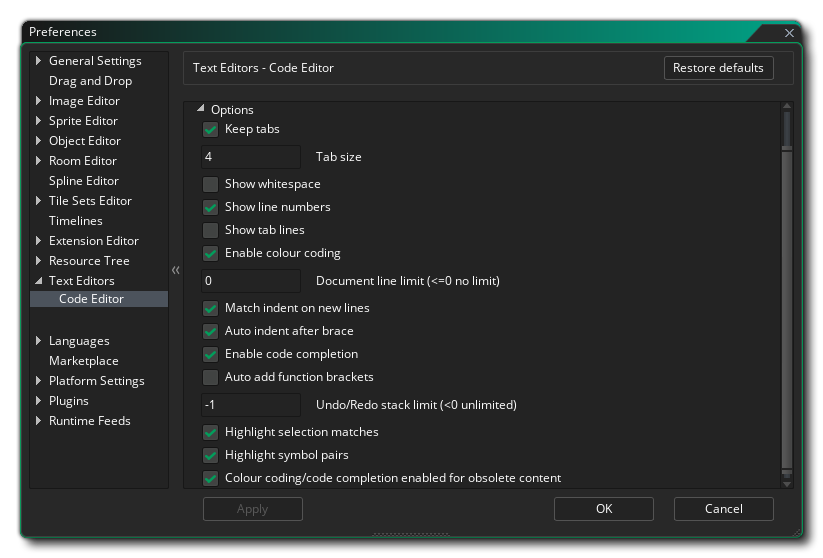

文本编辑器偏好设置用来定义不同的代码/脚本编辑器的外观和感受。主要页面有以下选项：
- 语法检查延迟（毫秒） - 语法检查之前延迟的时间（毫秒）。默认值是2000毫秒。
- 代码补全延迟（毫秒） - 延迟的时间（毫秒）
- 在全屏编辑器中打开脚本 - 勾选此项将让脚本自动在新的工作区打开。如果没有勾选上，将在当前工作区的窗口中打开。默认是未勾选状态。
- 在全屏编辑器中打开着色器 -勾选此项将使着色器自动在新的工作区打开。如果没有勾选上，将在当前工作区的窗口中打开。默认是未勾选状态。
- 在全屏编辑器中打开物体事件 - 勾选此项将自动在新的工作区打开物体事件代码。如果未勾选，将在物体事件编辑器相关的窗口中打开。默认是未勾选状态。
- 在同一个窗口以标签的形式打开事件脚本 - 添加脚本或者拖拽到一个事件中时，代码窗口将链接到事件窗口，然而当这个选项被勾选时，任何之后打开编辑的事件将添加到同一个窗口中，沿着窗口的顶部依次添加。不勾选这个选项将使得每一个打开的事件作为独立的链接窗口打开。选项默认勾选上。
- 在同一个窗口以标签的形式打开链接的脚本 - 当你拥有多个链接的脚本并且打开它们，默认它们将分组 在相同的窗口中以标签的形式打开。不勾选这个选项将强制他们在他们的工作区中分别打开。选项默认勾选上。
- 平移文本编辑器进入焦点视图 - 从物体事件打开文本编辑器时，打开此选项将自动平移工作区以使编辑器处于可视范围内。该选项默认为关。
- 默认代码窗口宽度 - 设置当代码编辑器窗口打开时的默认宽度（像素）。默认值为 900。
- 默认代码窗口高度 - 设置当代码编辑器窗口打开时的默认高度（像素）。默认值为 600。
- 最小代码窗口宽度 - 设置代码编辑器窗口的最小宽度（像素）。默认值为 300。
- 最小代码窗口高度 - 设置代码编辑器窗口的最小高度（像素）。默认值为 200。
除了上述选项之外，还有两个子类别用于代码和对话框编辑器偏好设置（在下面一起显示是因为他们的偏好设置完全相同）：

颜色偏好设置用于更改代码和脚本编辑器如何显示不同的文本。每个条目都有一些子条目，以便你可以准确的定义每个单独的文本应如何显示，如上面示例图所示。一般来说，你可以为每个不同的选项设置颜色、字体、大小和样式。再进一步，你还可以为代码括号等的行选择设置更多一般的样式。 
在颜色偏好设置下，你有不同风格的 选项。这些偏好设置用于设置代码/脚本编辑器的行为，并提供以下选项：
- 保持tab键缩进对齐：如果选中， 这将使编辑器中按下tab键作为tab字符-‘\t’，而不选中则表示tabs转化为空格?。默认为关。
- 单次Tab大小：按下“tab”键应该缩进代码的字符空格数量。默认是4。
- 显示空白区域（彩色连续的英文句号）：显示“显示空白”（看下图）。默认为关。
- 显示行号：是否在最左侧显示行数。默认开启。
- 显示tab对齐纵线：显示“....”以显示选项卡式的空间（原文有误，实际测试应该显示很多坚线，坚线间隔一个tab空间）。默认为关。
- 启用颜色代码（语法高亮）：启用或禁用编辑器的颜色编码。如果关闭，代码将不会样式化，而打开它将会使用上面的颜色选项中给定的格式进行样式化处理。默认开启。
- 文档行限制（<=0 表示不限）：设置任意给定的编辑器文档的行数的最大数目。默认值是0（0或者更小表示不限），任何其它值将限制允许的行数。
- 在另起行保持缩进：启用或者禁用你代码的自动缩进。默认开启，添加新行时将保持缩进。
- 在大括号后自动缩进: 启用或者禁用代码添加 {} 时的自动缩进。默认开启，当新的括号 { 和新的行被添加时，它将标记下一行代码。
- 启用代码自动补全：启用或者禁用代码补全窗口。当代码并且启用时，你将看到一个弹出窗口，显示基于你输入文本的可能的函数。默认开启。
- 自动添加函数括号: 启用或禁用在使用自动填充时自动为函数添加括号 ()。 当你写代码并且这个开启时，IDE将自动添加函数需要的两个括号()，如果函数有参数将会光标将会放置在括号内，如果没有参数，光标将会放在后面。这个特性只有在自动补全开启时才有效。默认开启。
- 撤消/重做堆栈限制（<0 无限制）：在这里你可以设置撤消/重做的堆栈限制。0或者低于0表示不限（受可用内存限制），而正数将限制堆栈为指定的数值，如果达到限制将删除堆栈尾部的动作。默认值为-1。
- 高亮选区匹配: 这将轻轻地突出显示其他地方重复的所有代码段。所以，例如，如果你选中一个函数，当前代码窗口所有此函数的实例也都会高亮。默认开启。
- 为含有弃用的内容的代码提供语法高亮和自动补全：这将突出显示代码中的过时函数。默认开启。